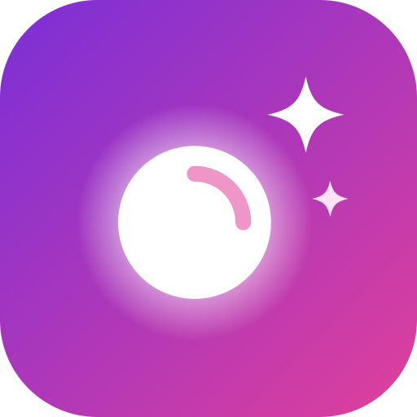
Glow
רקע חדש. כוח חדש.משפטים של מוטיבציה וחיזוק על הטלפון – בווידג'ט במסך הבית ובמסך הנעילה – שמתחלפים אפילו כל כמה שניות. עובד עם הרקע שלך, ואם רוצים Glow גם מחליף רקעים: רק בבית, רק בנעילה או בשניהם.
הורד 10 פעמים כל המספרים
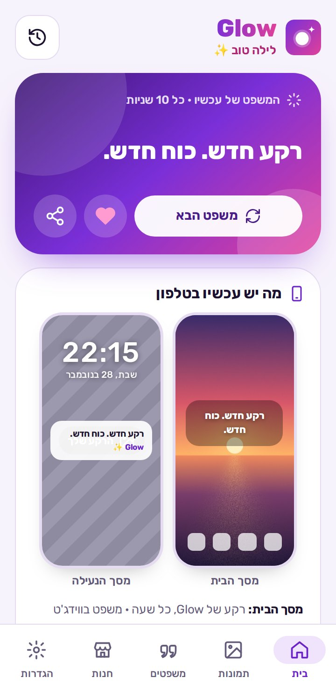
מה חדש
גרסה 1.2- הרקעים של Glow לא חובה: אפשר להשאיר את הרקע שלך, ולבחור רקע של Glow רק בבית, רק בנעילה או בשניהם
- המשפט כבר לא מודפס על הרקע: במסך הבית הוא בווידג'ט, ובמסך הנעילה בהודעה שקטה (או על הרקע, אם רוצים)
- משפטים מתחלפים אפילו כל כמה שניות, באקראי או לפי הסדר שלך – עם מסך סידור וחצים
- ווידג'ט חדש: חמישה מראות, צבע ויישור, לחיצה על המשפט = המשפט הבא
- מסך בית חדש וברור: המשפט של עכשיו, מה יש בכל מסך, ומתגים פשוטים – בעיצוב עגול ושמח יותר
עובד לגמרי בלי אינטרנט
- 50 התמונות ו-180 המשפטים שבאים עם האפליקציה נמצאים בתוך הטלפון.
- הווידג'ט, המשפט במסך הנעילה וההחלפות – אפילו כל כמה שניות – עובדים גם כשהאפליקציה סגורה ובלי אינטרנט.
- התמונות והמשפטים שלכם, וחבילות שהורדתם מהחנות, נשמרים רק בטלפון.
- שיתוף משפט כתמונה ושליחת האפליקציה לחבר כקובץ עובדים בלי אינטרנט.
צריך אינטרנט רק כדי להוריד חבילות מהחנות, לקבל עדכון ולשלוח פנייה למפתח.
התקנה
- מורידים
לוחצים "הורדה לאנדרואיד" למעלה. הקובץ glow.apk יורד לטלפון.
- מתקינים
פותחים את הקובץ מההתראות או מתיקיית ההורדות. בפעם הראשונה מאשרים "התקנה ממקור לא ידוע".
- שלוש שאלות
בפתיחה הראשונה: רקעים של Glow או הרקע שלך, משפט במסך הנעילה, וכל כמה משפט חדש. "בואו נתחיל" – ומיד מוסיפים את הווידג'ט למסך הבית.
- מאשרים
למשפט במסך הנעילה Glow מבקש להציג הודעות (שקטות, בלי צליל). למה זה צריך
אם מופיעה אזהרה של Google Play Protect על אפליקציה לא מוכרת, בוחרים להתקין בכל זאת. זה קורה בכל אפליקציה שלא הורדה מחנות Google Play. עובד מאנדרואיד 6. במסך הנעילה – מאנדרואיד 7 ומעלה.
בית
הכל במקום אחד, במילים פשוטות: המשפט של עכשיו, מה יש בכל מסך, ושלושה מתגים – משפטים, ווידג'ט ורקעים.
- המשפט של עכשיובגדול, עם "משפט הבא", לב למועדפים ושיתוף כתמונה.
- מה יש עכשיו בטלפוןשני טלפונים קטנים: מסך הבית ומסך הנעילה, בדיוק כמו שהם – רקע של Glow או הרקע שלך, הווידג'ט וההודעה. מתחת: משפט אחד לכל מסך שמסביר מה קורה.
- משפטיםמדליקים או מכבים, ורואים כל כמה הם מתחלפים ואיפה הם מופיעים.
- ווידג'טהוספה למסך הבית בלחיצה, ובחירת המראה.
- רקעים מ-Glowמתג אחד. כבוי – הרקעים שלך נשארים בדיוק כמו שהם. דולק – רקע חדש, הקודם והגדרות.
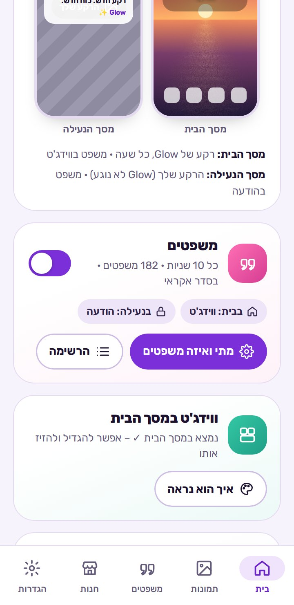
משפטים: איפה, מתי ואיזה
המשפטים עובדים עם כל רקע – גם עם הרקע הרגיל של הטלפון.
- מסך הביתבווידג'ט, שעומד מעל האפליקציות. הווידג'ט
- מסך הנעילהבהודעה שקטה (בלי צליל), מודפס על הרקע של Glow, או בלי.
- כל כמה שניותכל 3, 5, 10, 15, 30 או 60 שניות. הווידג'ט מחליף לבד, בלי לבזבז סוללה.
- לפי זמן / כל הדלקת מסך / לפי שעות היום / רק בלחיצהלכל קצב שרוצים – מדקה ועד פעם ביום.
- איזה משפטיםהכל, המועדפים, שלי, או חבילה.
- סדראקראי, או לפי הסדר שלך. "לסדר את המשפטים" מראה את הרשימה עם חצים למעלה ולמטה.
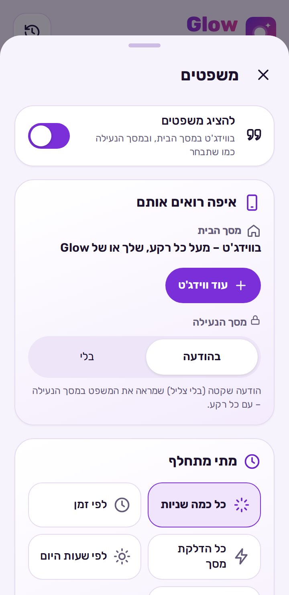
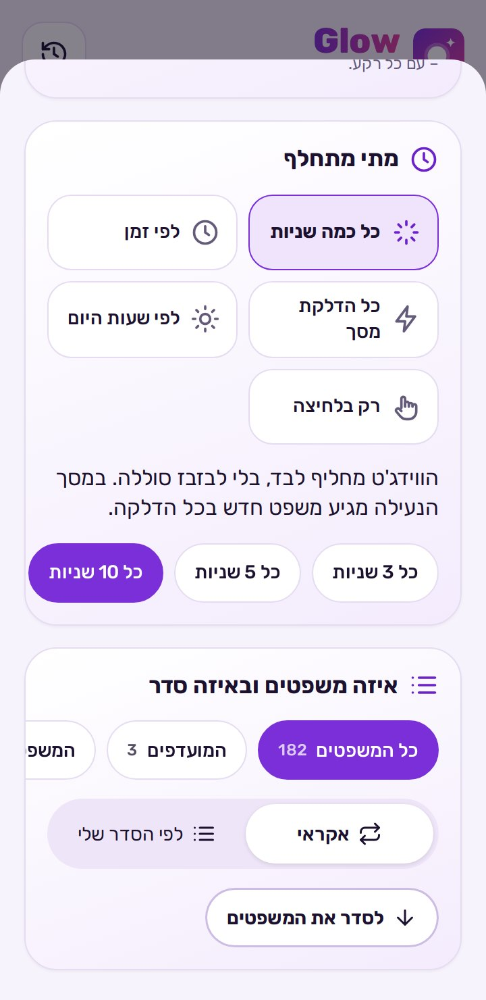
ווידג'ט
כך המשפט מופיע במסך הבית: חלון שעומד מעל האפליקציות, על כל רקע. מגדילים ומזיזים אותו כמו כל ווידג'ט, והכתב גדל איתו.
- מראהזכוכית, כהה, בהיר, שקוף, או בצבעים של Glow.
- צבע ויישורצבע הכתב (או אוטומטי), באמצע או לימין.
- לחיצה על המשפטהמשפט הבא. הלב – למועדפים.
- כפתורים קטניםמשפט הבא, רקע חדש (כשרקעי Glow דולקים) ופתיחת Glow. אפשר להסתיר אותם.
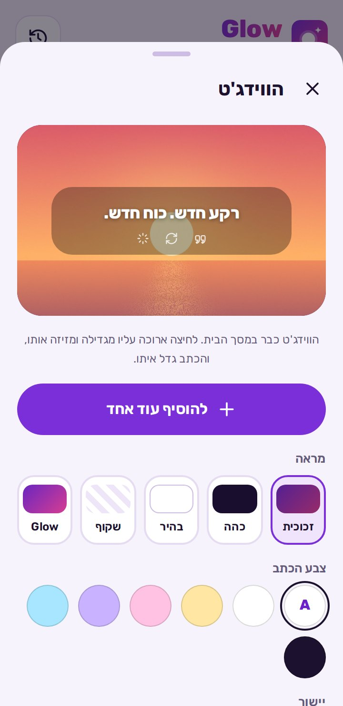
רקעים מ-Glow (לא חובה)
רוצים גם רקעים מתחלפים? בוחרים על איזה מסך. מסך שלא בוחרים נשאר עם הרקע שלכם, ו-Glow לא נוגע בו.
- מסך הבית / מסך הנעילהכל אחד בנפרד: רקע של Glow או הרקע שלך. למשל נעילה רגילה ובית של Glow, או הפוך.
- אותה תמונה / תמונה אחרת בכל אחדכשהשניים דולקים, אפשר לתת לכל מסך תמונות וזמנים משלו.
- מתי מגיעה תמונה חדשהלפי זמן, כל הדלקת מסך, לפי שעות היום (זריחה בבוקר, כוכבים בלילה), או רק בלחיצה.
- מאיזה תמונותהכל, מועדפות, שלי, או קבוצה.
- בחירת רקע משליכשמכבים, הרקע האחרון של Glow נשאר – והכפתור הזה פותח את בחירת הרקע של הטלפון.
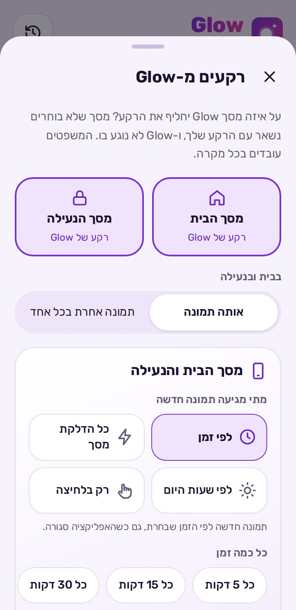
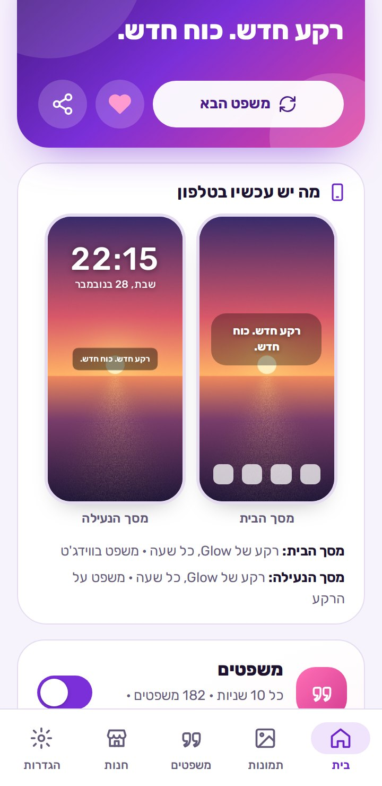
עיצוב המשפט על הרקע
כשבוחרים שהמשפט יודפס על רקע הנעילה של Glow, ובתמונות ששולחים בשיתוף.
- מיקום, גודל וצבעלמעלה, באמצע או למטה; ארבעה גדלים; שמונה צבעים.
- גופן ורקע למשפטמודרני, פשוט או קלאסי; פס כהה, בהיר או בלי (ואז צל לכתב).
- לשים על הרקע עכשיומחיל את העיצוב מיד.
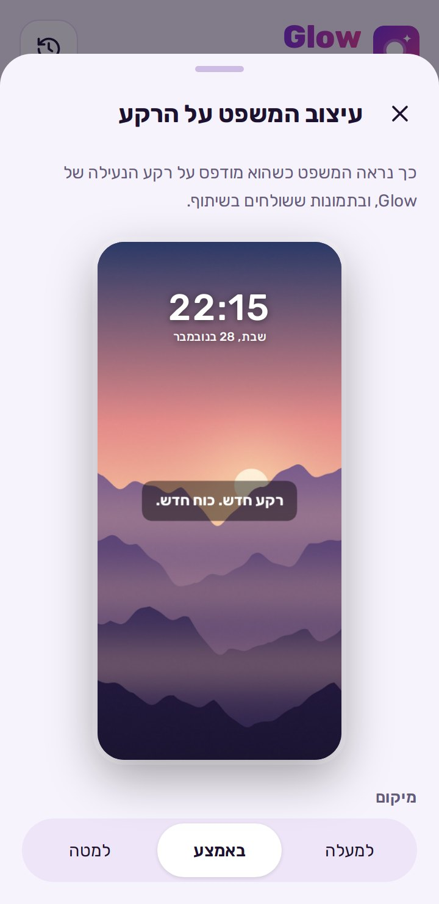
מה הוצג לאחרונה
כל משפט ורקע שהיו על המסך, מהחדש לישן, ואיך הוחלפו (לפי זמן, בהדלקה, בלחיצה או מהווידג'ט).
- לחיצה על שורהמחזירה את המשפט או הרקע למסך.
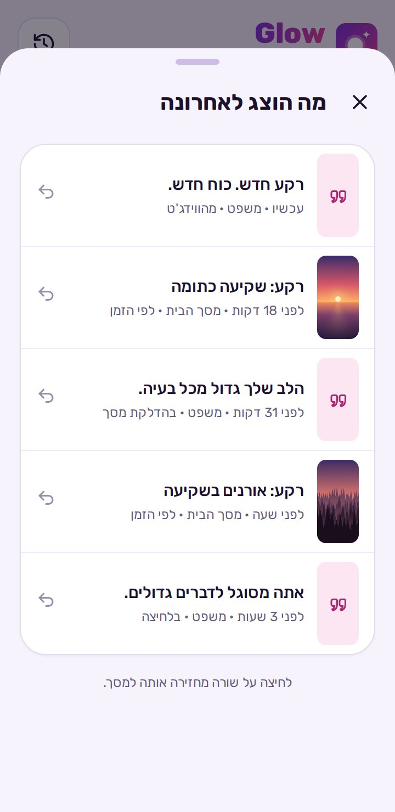
תמונות
50 תמונות מצוירות במיוחד – זריחות, הרים, ים, מדבר, לילה, יערות וצבעים – בלי אנשים, ותמונות משלכם. הן נכנסות לפעולה כשמדליקים רקעים מ-Glow.
- הוספת תמונות מהטלפוןאחת או הרבה. הן מוקטנות לגודל של מסך ונשמרות באפליקציה.
- לחיצה על תמונהלשים עכשיו, מועדפת, בסבב או לא, ולאיזה שעות ביום היא מתאימה.
- מחיקהרק לתמונות שלכם.
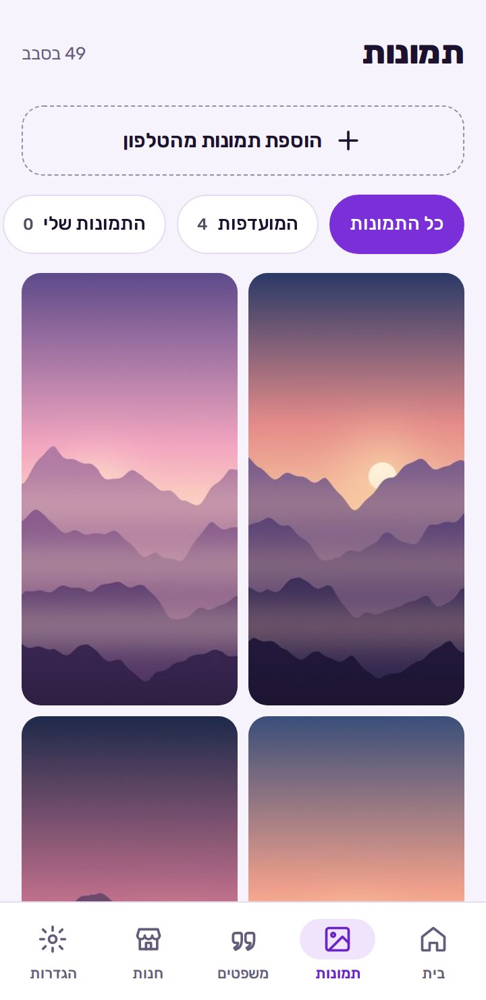
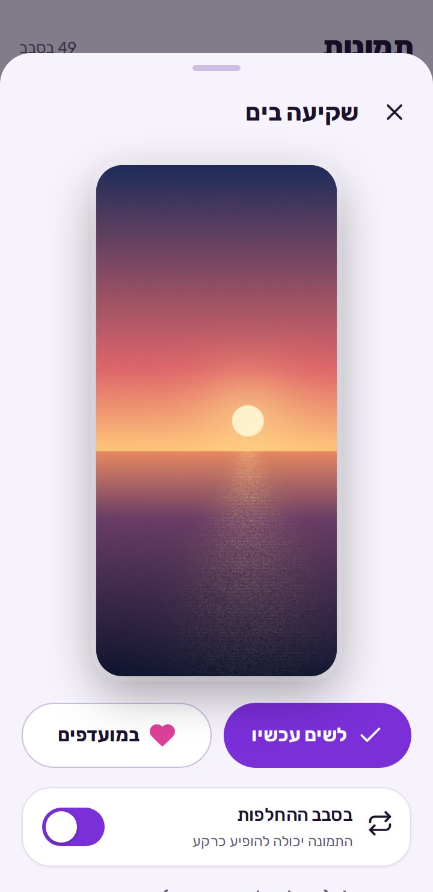
משפטים
180 משפטי מוטיבציה וחיזוק באים עם האפליקציה, ועוד בחנות. ואפשר לכתוב משלכם.
- משפט חדשכותבים, והוא נכנס לסבב.
- סידורהרשימה לפי הסדר שבו המשפטים יופיעו, עם חצים למעלה ולמטה. בכל משפט יש גם "ראשון בתור".
- ייבוא וייצואקובץ טקסט – משפט בכל שורה.
- חיפוש, קבוצות ולבמוצאים לפי מילה, מסננים לפי חבילה, מסמנים מועדפים.
- לחיצה על משפטלשים עכשיו, בסבב או לא, שיתוף כתמונה, העתקה, עריכה ומחיקה של משפט שלכם.
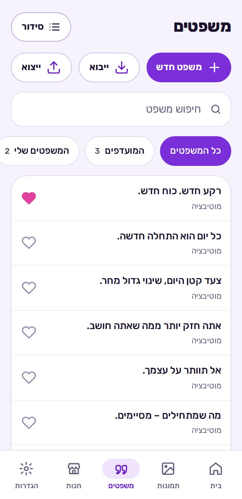
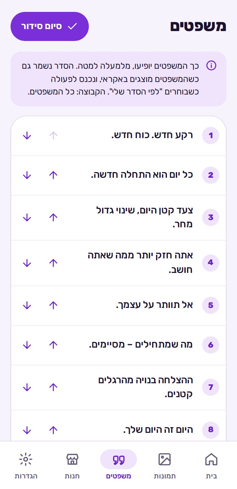
חנות
חבילות של משפטים ותמונות, בחינם. מורידים פעם אחת – ומשם הן עובדות גם בלי אינטרנט.
- הורדההמשפטים והתמונות נכנסים לסבב מיד.
- עדכון / הסרהכשחבילה מתעדכנת, או כשלא צריך אותה.
- עדכון אוטומטיכשיש אינטרנט, חבילות חדשות ועדכונים נכנסים לבד.
יש לכם רעיון לחבילה? כתבו לנו דרך "פנייה / הצעת ייעול".
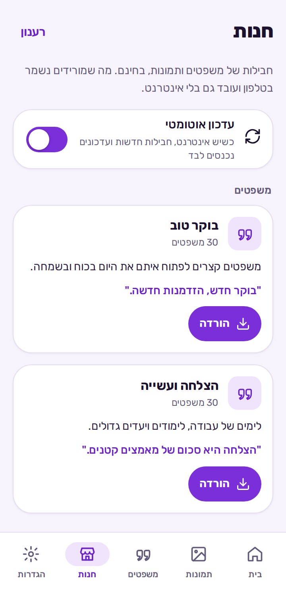
הגדרות
כל מה ש-Glow עושה, בשורה אחת לכל חלק, ועבודה ברקע.
- משפטים, ווידג'ט, רקעיםקיצור לכל ההגדרות.
- שעות היוםמתי מתחילים בוקר, צהריים, ערב ולילה.
- בלי הגבלת סוללהשהטלפון לא יעצור את Glow.
- הודעותצריך למשפט במסך הנעילה ולהחלפה בכל הדלקת מסך. ההודעה שקטה – בלי צליל ובלי רטט.
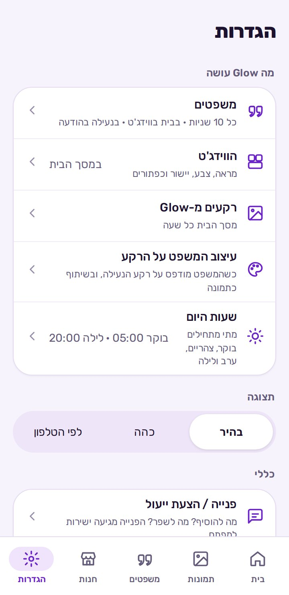
עדכונים
כשיש אינטרנט ויוצאת גרסה חדשה, בפתיחת האפליקציה קופץ חלון "גרסה חדשה" עם רשימה של מה השתנה.
- עדכון עכשיוהעדכון נכנס בתוך האפליקציה, והיא נפתחת מחדש בגרסה החדשה. לא צריך להתקין קובץ, וכל התמונות והמשפטים נשארים.
- הורדת הגרסה החדשהמופיע רק בגרסה שמשנה את החלק של אנדרואיד (ההחלפה ברקע, הווידג׳ט). מתקינים אותה פעם אחת מעל הקיימת, והתמונות והמשפטים נשארים.
- אחר כךסוגר את החלון. אפשר לעדכן מתי שרוצים.
- בדיקת עדכוניםהגדרות ← כללי ← בדיקת עדכונים
אם רוצים לבדוק בעצמכם.
בלי אינטרנט הכל ממשיך לעבוד כרגיל. העדכון מחכה לפעם הבאה שיהיה חיבור.
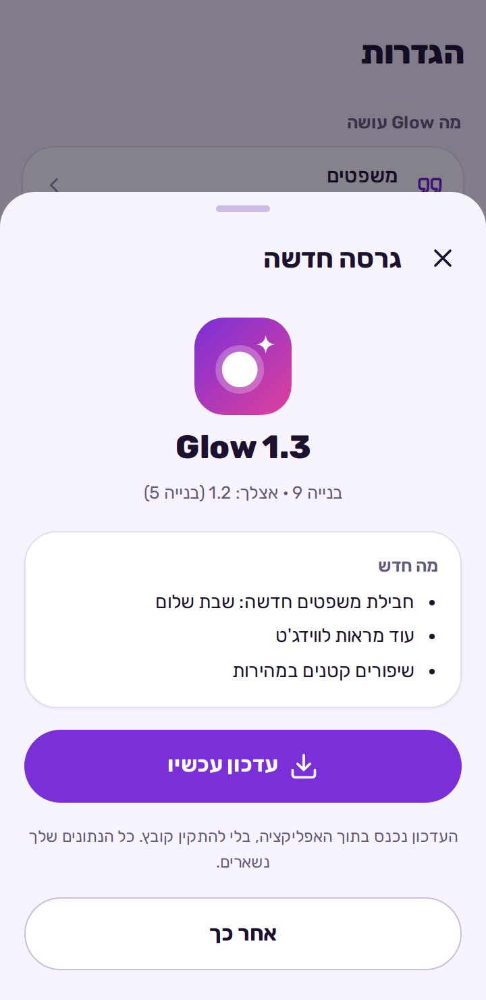
מה מבקשים מכם
להשתמש באפליקציה כרגיל, ולספר מה לא עבד, איזה משפטים או תמונות הייתם רוצים, ומה היה עושה את Glow טוב יותר.
- איפההגדרות ← פנייה / הצעת ייעול
- מה ממלאיםסוג (הצעת ייעול, תקלה או אחר), שם, מייל, ומה רציתם להגיד.
- שליחת הפנייההפנייה מגיעה ישר למפתח. אם אין אינטרנט, היא נשמרת ונשלחת לבד כשהחיבור חוזר.
- טיפ לתקלותכתבו באיזה טלפון, מה קרה, ומה ציפיתם שיקרה.
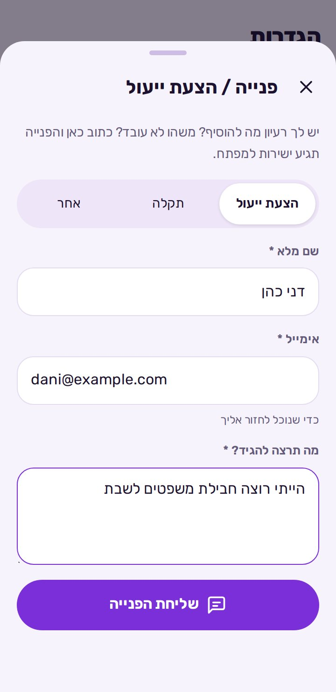
פותח על ידי Itzko
Glow היא אפליקציה עצמאית של Itzko: בלי פרסומות, בלי הרשמה, והתמונות והמשפטים שלכם נשארים אצלכם בטלפון. כל רעיון או תקלה מגיעים ישירות אליו דרך "פנייה / הצעת ייעול" בהגדרות של האפליקציה.